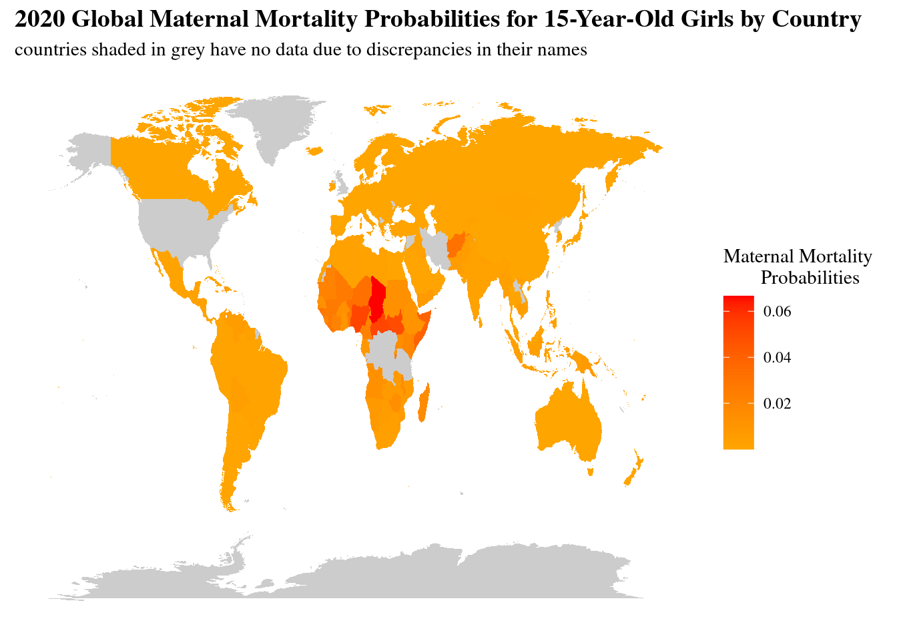
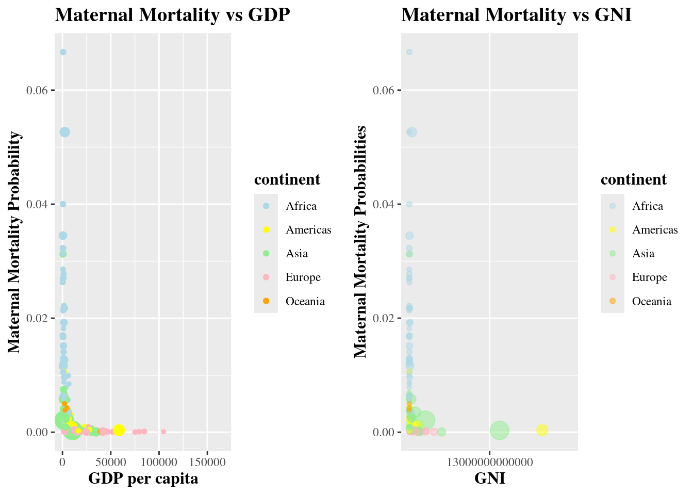

Maternal Mortality Matters
A Global Insight into Lifetime Risk
Within the complex landscape of global health, the tale of maternal mortality unfolds as a poignant narrative. Embark on a visual voyage unveiling a compelling examination of the global lifetime risk of maternal death. These visual representations, meticulously crafted using UNICEF’s data, seek to elevate awareness and ignite initiatives as we delve into the vital domain of maternal welfare.
Continental Contrasts - Maternal Mortality Rates
This bar chart depicts maternal mortality rates by continent.
This bar chart reveals pronounced disparities among regions. Notably, Africa stands out with considerably higher maternal mortality rates compared to other continents, underscoring the vast gap between developed and developing nations. The visual presentation emphasizes the urgent need for targeted interventions and resources to address maternal health challenges, particularly in African countries.
Life and Death - Exploring Maternal Health and Longevity
This scatterplot depicts the correlation between a country’s average life expectancy and its maternal mortality probabilities.
Within this scatterplot, a clear pattern unveils itself, countries with higher maternal mortality rates tend to have lower average life expectancies, while those with lower maternal mortality rates exhibit higher average life expectancies. This underscores the crucial role of access to quality maternal care in influencing overall well-being and longevity. Conversely, regions facing higher maternal mortality rates often encounter challenges in healthcare access, education, and socio-economic development. Addressing maternal health emerges as a key component of broader public health efforts, with the potential to improve both maternal well-being and life expectancy, fostering healthier communities.
Life’s Price Tag - Maternal Mortality and GDP vs GNI

The examination of maternal mortality rates in the above charts, alongside both Gross National Income (GNI) and Gross Domestic Product (GDP), reveals a consistent trend - wealthier nations tend to exhibit lower maternal mortality rates, whereas less economically developed nations often face higher rates. This correlation emphasizes the relationship between economic prosperity and maternal health outcomes.
- GNI represents the total income earned by a country’s residents globally
- GDP focuses solely on domestic economic activity
The inclusion of both GNI and GDP subtly emphasizes how a more encompassing measure, GNI, reflects the global extent of a nation’s wealth, while GDP centres on internal economic production. Despite this distinction, both metrics underscore the crucial connection between economic well-being and maternal health.
Conclusion and Recommendations
The analysis of maternal mortality rates has underscored a poignant reality, a stark correlation exists between economic disparities, life expectancy, and maternal health outcomes. The evidence overwhelmingly suggests that poorer countries tend to grapple with higher maternal mortality probabilities, amplifying the urgency to address the root causes of these disparities.
In conclusion, addressing maternal mortality rates requires a multifaceted approach that addresses socio-economic, educational, and healthcare disparities. By implementing targeted interventions, such as,
- prioritizing healthcare infrastructure
- enhancing education initiatives
we can strive towards a future where every woman, regardless of her socio-economic background, has the opportunity to experience a safe and healthy childbirth.